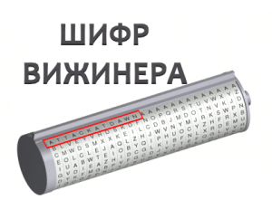
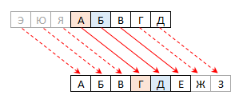

Метод Віженера

Шифр Віженера - метод поліалфавітного шифрування буквеного тексту з використанням ключового слова.
Цей метод є простою формою багатоалфавітної заміни. Шифр Віженера винаходили багато разів. Уперше цей метод описав Джован Баттіста Беллазо (італ. Giovan Battista Bellaso) у книзі La cifra del. Sig. Giovan Battista Bellaso 1553 року, однак, у XIX столітті отримав ім'я Блеза Віженера, французького дипломата. Метод простий для розуміння та реалізації, він є недоступним для простих методів криптоаналізу.
Шифр Віженера є шифром підстановки, тобто шифром, у якому кожна літера початкового тексту заміняється літерою шифр-тексту. Для взлому таких шифрів використовується частотний криптоаналіз.
Як працює метод

Система шифрування Віженера подібна до такої системи шифрування Цезаря, у якої ключ підставляння міняється від букви до букви. Цей шифр багатоалфавітної заміни можна описати таблицею шифрування, яку називають таблицею (квадратом) Віженера.
Таблиця Віженера використовується для шифрування та дешифрування.
Таблиця має два входи:
- верхній рядок підкреслених символів, який використовується для зчитування чергової букви початкового тексту;
- крайній лівий стовпець ключа.
У шифрі Цезаря кожна буква алфавіту зсувається на кілька позицій; наприклад, у шифрі Цезаря, якщо зсунути праворуч на 5, А стало б Е, Б стало б Е, В - Ж і так далі
| Вихідний алфавіт | А | Б | В | Г | Д | Е | Є | Ж | З | З | И | І | Ї | Й | К | Л | М | Н | О | П | Р | С | Т | У | Ф | Х | Ц | Ч | Ш | Щ | Ь | Ю | Я |
| Шифрований | Е | Є | Ж | З | И | І | І | Ї | Й | К | Л | М | Н | О | П | Р | С | Т | У | Ф | Х | Ц | Ч | Ш | Щ | Ь | Ю | Я | А | Б | В | Г | Д |
Шифр Віженера складається з послідовності кількох шифрів Цезаря з різними значеннями зсуву. Для зашифровування може використовуватися таблиця алфавітів, звана tabula recta або квадрат (таблиця) Віженера. Стосовно до українського алфавіту таблиця Віженера складається з рядків по 33 символи, причому кожен наступний рядок зсувається на кілька позицій. Таким чином, у таблиці виходить 33 різних шифрів Цезаря. На кожному етапі шифрування використовуються різні алфавіти, які обирають залежно від символу ключового слова.

Якщо пронумерувати літери алфавіту від 0 до 32 (а → 0, б → 1, в → 2, …), то шифрування Віженера є можливим представити формулою
Ci = (Pi + Kj) mod 33,
де Kj — j-та літера ключового слова. Ключове слово повторюється, поки не отримано гаму, рівну довжині повідомлення
Приклад
Наприклад, припустимо, що вихідний текст і ключ мають такий вигляд:
| Текст | Ш | И | Ф | Р | В | І | Ж | И | Н | Е | Р | А |
| Ключ | К | О | Д | К | О | Д | К | О | Д | К | О | Д |
Щоб зашифрувати текст, необхідно записати ключове слово "КОД" циклічно доти, доки його довжина не відповідатиме довжині вихідного тексту.
| Текст | Ш | И | Ф | Р | В | І | Ж | И | Н | Е | Р |
| Ключ | К | О | Д | К | О | Д | К | О | Д | К | О |
| Шифр | Г | Ч | Ш | И | Р | М | С | У | С | П | Я |
Перший символ вихідного тексту ("Ш") зашифровано послідовністю К, яка є першим символом ключа. Перший символ зашифрованого тексту ("К") знаходиться на перетині рядка К і стовпця Ш у таблиці Віженера. Так само для другого символу вихідного тексту використовується другий символ ключа; тобто другий символ зашифрованого тексту ("И") виходить на перетині рядка О і стовпчика И. Решта вихідного тексту шифрується в такий самий спосіб.